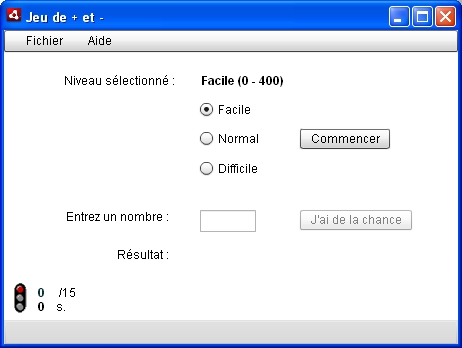
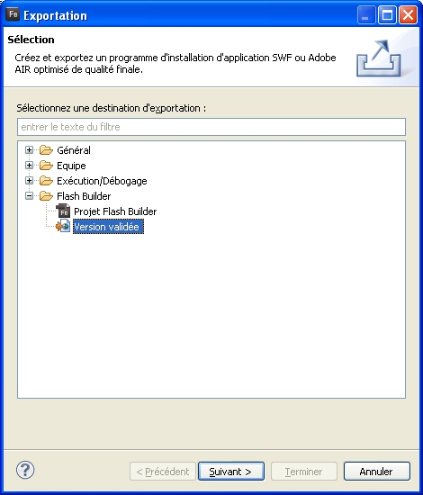
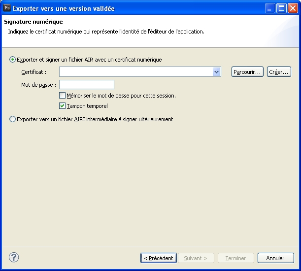
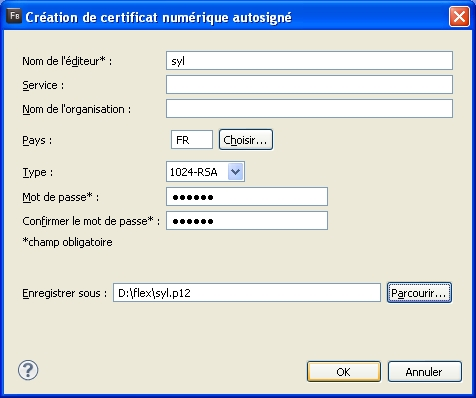

Avant de commencer et d'entrer dans le vif du sujet il est impératif d'avoir lu et compris le tutoriel Découvrez Flex. En effet celui-ci expose les bases essentielles pour suivre ce tutoriel qui va un peu plus loin dans le sujet.
Qu'allez-vous apprendre à faire avec ce tutoriel ?
Vous allez voir comment l'on peut créer une application de bureau (dite "RDA", voir définition dans le premier chapitre) grâce à Flex. Cette application sera en fait un jeu, un des plus connus qu'il soit : le jeu du plus et moins. Ne vous en faites pas, je l'ai travaillé et il n'est pas basique.
Voici un aperçu du résultat, histoire de vous donner envie de continuer à lire. :p

Côté programmation, nous allons utiliser évidemment le couple MXML / ActionScript. Le premier pour la partie affichage et le second pour la partie logique.
Je pense qu'il est tout de même nécessaire de vous rappeler ce qu'est Flex.
Citation : Définition
Flex est un framework open source ActionScript, le langage de développement d'Adobe. Flex permet de créer ce qu'on appelle des RIA (Rich Internet Application) et des RDA (Rich Desktop Application). Les RIA sont des applications qui tournent sur des serveurs web, le client a besoin d'Adobe Flash Player. Les RDA sont des applications plutôt dites "clientes" et nécessitent donc un runtime spécifique appelé AIR (Adobe Integrated Runtime).
Quels outils pour développer en Flex ?
Vous devez disposer de L'IDE (Integrated Development Environment) d'Adobe, à savoir Flash Builder 4. À noter que la précédente version de l'IDE se nommait Flex Builder 3 (celle vue dans le tutoriel que je vous ai recommandé de lire). En passant à Flex 4, Adobe a décidé de nommer son IDE Flash Builder 4.
Pourquoi pas Flex Builder 4 ?
Tout simplement, car il y avait trop de confusions, la majorité des gens pensaient (et pensent toujours) que Flex est un langage à part entière. Je le répète : Flex est un framework ActionScript ! :pirate:
Téléchargements
À noter que Flash Builder 4 (ou Flex Builder 3 et précédents) est un IDE basé sur le célèbre Eclipse. Au téléchargement vous pourrez soit télécharger l'IDE complet, soit télécharger le plug-in Flex pour Eclipse si vous l'avez déjà d'installé.
Pour pouvoir commencer à coder, il va falloir créer un projet Flex.
Je vais vous guider, mais rappelez-vous que vous devez impérativement lire le tutoriel suscité en introduction ou alors vous serez perdu. Si ce n'est pas fait allez-y en revenez ensuite.
À la différence du tutoriel recommandé, nous allons créer un projet AIR.
Après avoir ouvert Flash Builder 4, faites Fichier > Nouveau > Projet Flex > Puis nous allons donner un nom à notre projet, "jeu" par exemple. Nous cochons "Application de bureau", "Utiliser le SDK par défaut" et nous n'utilisons aucun type de serveur.
L'IDE nous a créé deux fichiers dans le répertoire src (sources).
jeu.mxml : il contiendra notre jeu, l'affichage et la logique.
jeu-app.xml : il contient des informations sur l'application, nom de la fenêtre principale, numéro de version, etc.
Lorsque vous double-cliquez sur jeu.mxml, un nouvel onglet va s'ouvrir, cet onglet contient des sous-onglets "Source" et "Création". En gros la source c'est le code qui permet de représenter la "création".
Dans la source vous retrouvez le code minimal permettant de créer la fenêtre vide que vous avez à l'écran :
<?xml version="1.0" encoding="utf-8"?>
<s:WindowedApplication xmlns:fx="http://ns.adobe.com/mxml/2009"
xmlns:s="library://ns.adobe.com/flex/spark"
xmlns:mx="library://ns.adobe.com/flex/mx">
<fx:Declarations>
<!-- Placer ici les éléments non visuels (services et objets de valeur, par exemple). -->
</fx:Declarations>
</s:WindowedApplication>
Rapidement, <s:WindowedApplication /> est notre fenêtre, tous les composants de cette fenêtre se trouveront à l'intérieur de cette balise. Les attributs qui commencent par xmlns représentent le chargement des packages qui vont servir pour la création des composants. En gros, nous aurons trois préfixes de balise : fx:, s: et mx:. Chacun correspond à un package. Je reviendrai un peu plus tard sur les packages. <fx:Declarations> est une nouvelle balise de Flex 4. En gros on doit y placer à l'intérieur les composants qui n'apparaissent pas directement à l'écran. J'ai du mal à vous trouver un exemple simple alors vous verrez par la suite, car nous devrons l'utiliser.
L'interface du jeu, je l'ai bien sûr déjà réalisée donc nous ne nous attarderons pas là-dessus. La création de l'interface est déjà évoquée dans le tutoriel à lire avant celui-ci. :p
Pour modifier l'apparence de la fenêtre : vous allez dans l'onglet Création puis vous sélectionnez l'objet dont vous voulez modifier les propriétés, en l'occurrence ici il n'y en a qu'un seul, vous pouvez cliquer au milieu. À droite apparaîtront alors les propriétés de l'objet.
Par exemple, mettez en valeurs : 454 en largeur et 314 en hauteur. Ensuite, basculez dans l'onglet Source, et vous verrez que les attributs (ou propriétés) ont été créés dans la balise <s:WindowedApplication >.
<?xml version="1.0" encoding="utf-8"?>
<s:WindowedApplication xmlns:fx="http://ns.adobe.com/mxml/2009"
xmlns:s="library://ns.adobe.com/flex/spark"
xmlns:mx="library://ns.adobe.com/flex/mx" width="454" height="314">
<fx:Declarations>
<!-- Placer ici les éléments non visuels (services et objets de valeur, par exemple). -->
</fx:Declarations>
</s:WindowedApplication>
Dans les balises <mx:Image /> vous devez changer les valeurs de l'attribut source en mettant bien le lien de l'image stockée sur votre disque dur.
Je vous mets le code complet de l'interface, à coller donc dans "Source".
N'oubliez pas de corriger les liens vers les images puis regardez ce que ça donne dans l'onglet Création.
Voilà notre exemple, <s:RadioButtonGroup id="radiogroup"/> est à l'intérieur de <fx:Declarations>. Pourquoi ? <s:RadioButtonGroup /> n'est pas un élément visuel. Il sert à créer un groupe de boutons radio "liés". Flex a besoin de cette balise sinon vous obtiendrez une erreur, essayez aussi de la retirer de <fx:Declarations> vous aurez une autre erreur. :) Je ne vais pas vous commenter chaque ligne. Elles ont été générées, car je les ai "dessinées" via l'outil de création. Cela ressemble plutôt à du (x)HTML, donc cela ne devrait pas être trop difficile à comprendre.
Dans le même fichier comme je vous ai dit tout à l'heure. Nous pouvons bien sûr le faire dans un fichier *.as séparé, mais ce n'est pas impératif pour une petite application comme la nôtre.
Au même titre que le JavaScript ou PHP, il faut utiliser une balise spéciale pour implémenter le code. Regardez le dernier bout de code affiché, vous verrez que j'ai créé <fx:Script> et <![CDATA[.
Voici les règles que j'ai établies : Le joueur a le droit à 15 essais ou à 45 secondes pour deviner le nombre, peu importe la difficulté choisie.
Déroulement du script
Voici une partie importante avant d'écrire un script : se demander quel cheminement il va adopter en fonction des événements (par exemple : interaction de l'utilisateur).
Au lancement de l'application (du jeu), la fonction init() (comme initialisation) sera exécutée (voir l'attribut creationComplete de <s:WindowedApplication /> . Cette fonction attribuera des valeurs par défaut à des variables et modifiera les propriétés de certains objets de l'interface.
Pour commencer à jouer, le joueur doit d'abord sélectionner la difficulté parmi 3 choix (facile, normal et difficile). Lorsque le joueur clique sur un bouton radio (bouton rond), on doit afficher le choix, pour cela on utilisera la fonction afficherNiveau() dans laquelle on passera en paramètre le libellé (label) ainsi que la valeur (value) correspondante. À noter que les valeurs sont respectivement : 400, 800 et 1000. C'est le nombre maximum que le script pourra piocher. Si on choisit le niveau difficile, alors le script choisira un nombre aléatoire compris entre 0 et 1000.
Une fois le choix sélectionné, le joueur clique sur "Commencer". Dès lors, la fonction genererNombre() sera exécutée avec en paramètre la valeur du bouton radio sélectionné (donc 400, 800 ou 1000). Le nombre aléatoire sera alors généré, la partie haute de l'application sera désactivée et celle du bas activée. On met également le chrono en route, car le joueur a 45 secondes.
À présent le joueur peut commencer à essayer des nombres. En validant (clic sur "J'ai de la chance"), la fonction verifierNombre() est exécutée avec en paramètre le nombre tapé par le joueur. La fonction compare alors le nombre aléatoire et le nombre tapé par le joueur. En plus de faire les comparaisons habituelles (inférieur ou supérieur), la fonction vérifie que le nombre ne vient pas d'être tapé. Si le nombre aléatoire correspond au nombre tapé par le joueur, alors la fonction gestionResultat() est appelée en prenant en paramètre "gagne". Elle affiche le résultat et affiche ou cache certains éléments de l'interface.
On propose alors au joueur de recommencer à jouer. Si "Oui" la fonction init() est exécutée et le cheminement recommence. Si "Non", on ferme l'application grâce à nativeApplication.exit() .
Le code
Avant de vous montrer du code, nous devons importer des packages, sauf que cette fois, nous importons des packages ActionScript et non pas MXML. Ce sont en fait des ensembles de classes déjà créées dont nous allons nous servir. :euh:
Nous en aurons besoin pour gérer le timer (notre chrono), et le petit menu qui sert plus à faire joli qu'autre chose.
Encore une chose, nous allons déclarer des variables utiles à notre application.
private var nombreAleatoire:Number; // le nombre à trouver
private var nombreTentatives:Number = 0; // nombre d'essais du joueur
private var nombreEntreTmp:Number = 0; // le dernier nombre entré
private var timer:Timer; // le chrono
À partir de maintenant il va falloir être concentré car je vais vous mettre du code et le commenter, essayez de vous rappeler le déroulement des actions.
// fonction exécutée au lancement de l'application
private function init():void { // le void signifie que la fonction retourne rien
tentatives.text = "0";
tentatives.setStyle("color", "#0b333c");
nombreTentatives = 0;
secondesText.text = "0";
nombreEntreTmp = 0;
recommencer.visible = false; // on cache le bloc qui propose de recommencer
resultat.text = "";
facile.enabled = true;
facile.selected = true;
normal.enabled = true;
difficile.enabled = true;
commencer.enabled = true;
nombreEntree.editable = false;
nombreEntree.enabled = false;
nombreEntree.text = "";
afficherNiveau(facile.label,parseInt(facile.value.toString())); // niveau facile
}
// fonction qui affiche le niveau choisi
private function afficherNiveau(label:String,niveau:Number):void {
niveauText.text = label +" (0 - "+ niveau.toString() +")"; // concaténation avec "+"
}
// fonction qui génère le nombre en fonction du niveau choisi
private function genererNombre(max:Number):void {
nombreAleatoire = Math.round(Math.random() * max); // création du nombre aléatoire
chance.enabled = true;
nombreEntree.editable = true;
nombreEntree.enabled = true;
facile.enabled = false;
normal.enabled = false;
difficile.enabled = false;
commencer.enabled = false;
feu_vert.visible = true;
feu_rouge.visible = false;
timer = new Timer(1000, 45); // intervalle de 1000 ms jusqu'à 45 s
timer.addEventListener(TimerEvent.TIMER, compteur); // on appelle compteur()
timer.addEventListener(TimerEvent.TIMER_COMPLETE, compteurTermine); // à 45 s on appelle compteurTermine()
timer.start(); // on lance le compteur
nombreEntree.setFocus(); // on donne le focus
}
// fonction qui met à jour le compteur
private function compteur(evt:TimerEvent):void {
var tmr:Timer = evt.currentTarget as Timer;
secondesText.text = tmr.currentCount.toString(); // on affiche
}
// fonction exécutée lorsque le compteur est terminé
private function compteurTermine(evt:TimerEvent):void {
gestionResultat("perdu");
}
// fonction qui compare le nombre entré et le nombre aléatoire
private function verifierNombre(nombreEntre:Number):void {
if(nombreEntre.toString() !== null) {
if(nombreEntreTmp == nombreEntre) { // si on tape le même nombre que le précédent
resultat.text = "Vous avez déjà validé ce nombre : "+ nombreEntreTmp;
} else {
if(nombreEntre > nombreAleatoire) {
resultat.text = "Votre nombre est trop grand : "+ nombreEntre;
} else if(nombreEntre < nombreAleatoire) {
resultat.text = "Votre nombre est trop petit : "+ nombreEntre;
} else if(nombreEntre == nombreAleatoire) {
gestionResultat("gagne");
timer.stop(); // arrêt du chrono
}
nombreEntreTmp = nombreEntre; // mise en mémoire le dernier nombre tapé
// on modifie le compteur des tentatives
if(nombreTentatives < 15) {
if(nombreTentatives >= 10) {
tentatives.setStyle("color", "#ff0000"); // on met en rouge
}
nombreTentatives++;
tentatives.text = nombreTentatives.toString();
} else {
gestionResultat("perdu");
timer.stop(); // arrêt du chrono
}
}
nombreEntree.setFocus(); // on donne le focus
}
}
// fonction qui gère "gagné" ou "perdu"
private function gestionResultat(res:String):void {
if(res == "gagne") { // gagné
resultat.text = "Gagné, "+ nombreAleatoire;
} else { // perdu
resultat.text = "Perdu, le nombre était "+ nombreAleatoire;
}
nombreEntree.enabled = false;
chance.enabled = false;
feu_vert.visible = false;
feu_rouge.visible = true;
recommencer.visible = true;
}
Et en bonus, le menu :
// fonction qui gère le menu
private function actionMenu(event:MenuEvent):void {
if(event.item.@data == "fermer") {
nativeApplication.exit();
} else if(event.item.@data == "regles") {
Alert.show("Le but du jeu est de deviner le plus rapidement le nombre tiré au sort par le programme.\nVous avez 45 secondes ou 15 essais !", "Règles");
} else if(event.item.@data == "credits") {
Alert.show("Syl.\nMail : [email protected] ", "Crédits");
}
}
Ah je vous ai pas dit, pour lancer l'application depuis l'IDE il faut cliquer sur l'icône à fond vert qui contient un triangle blanc (raccourci Ctrl + F11).
Maintenant si vous voulez envoyer votre jeu à vos amis, ou même l'installer sur votre ordinateur il faut l'exporter. Pour ce faire, clic droit sur le projet puis Exporter... >

> Flash Builder > Version validée > Suivant > Vous choisissez où vous souhaitez créer l'installeur *.air.
Maintenant il faut créer un certificat, > Créer... >

Mettez un mot de passe bidon, il vous sera demandé pour exporter. J'ai mis azerty.

Terminez avec Terminer.
Un installeur *.air a été créé à l'endroit que vous avez indiqué. Double-cliquez dessus et vous obtiendrez :


{kind=link}
{kind=link}